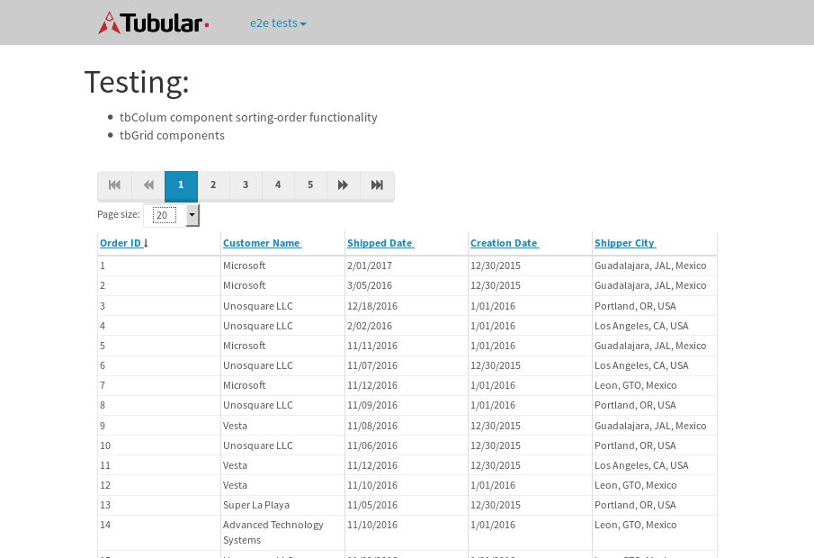

tbColumn.Grid Sorting - 177.286sTests: 5Skipped: 0Failures: 3 should sort data in ascending order then on descending order when sorting by Order Id column - 44.904sExpected '1' to be '500'.✗Expected '20' to be '481'.✗Tests passed: 50.00%should order data in ascending order when click-sorting an unsorted text column - 22.928sTests passed: 100.00%should order data in descending order when click-sorting an ascending-sorted text column - 43.042sExpected 'Advanced Technology Systems' to be 'Vesta'.✗Tests passed: 0.00%should order data in ascending order when click-sorting an unsorted date column - 23.233sTests passed: 100.00%should order data in descending order when click-sorting twice an unsorted date column - 43.171sExpected '12/30/2015' to match /1\/01\/2016/.✗Tests passed: 0.00%
tbEmptyForm - 18.909sTests: 3Skipped: 0Failures: 0 should have an empty required field - 17.165sTests passed: 100.00%should not be able to click on save - 0.032sTests passed: 100.00%should load default value for numeric field - 0.035sTests passed: 100.00%
Tubular Filters.tbColumnFilter - 103.961sTests: 12Skipped: 0Failures: 0 should cancel filtering when clicking outside filter-popover - 7.249sTests passed: 100.00%should disable Value text-input for "None" filter - 5.49sTests passed: 100.00%should disable apply button for "None" filter - 5.554sTests passed: 100.00%should decorate popover button when showing data is being filtered for its column - 10.735sTests passed: 100.00%should correctly filter data for the "Equals" filtering option - 6.775sTests passed: 100.00%should correctly filter data for the "Not Equals" filtering option - 6.943sTests passed: 100.00%should correctly filter data for the "Contains" filtering option - 7.502sTests passed: 100.00%should correctly filter data for the "Not Contains" filtering option - 7.425sTests passed: 100.00%should correctly filter data for the "Starts With" filtering option - 5.869sTests passed: 100.00%should correctly filter data for the "Not Starts With" filtering option - 5.725sTests passed: 100.00%should correctly filter data for the "Ends With" filtering option - 5.845sTests passed: 100.00%should correctly filter data for the "Not Ends With" filtering option - 5.881sTests passed: 100.00%
Tubular Filters.tbColumnDateTimeFilter - 122.666sTests: 12Skipped: 0Failures: 0 should cancel filtering when clicking outside filter-popover - 6.127sTests passed: 100.00%should disable Value text-input for "None" filter - 5.61sTests passed: 100.00%should disable apply button for "None" filter - 5.71sTests passed: 100.00%should clear filtering when clicking on Clean button - 16.554sTests passed: 100.00%should decorate popover button when showing data is being filtered for its column - 11.123sTests passed: 100.00%should correctly filter data for the "Equals" filtering option - 5.84sTests passed: 100.00%should correctly filter data for the "Not Equals" filtering option - 6.284sTests passed: 100.00%should correctly filter data for the "Between" filtering option - 10.945sTests passed: 100.00%should correctly filter data for the "Greater-or-equal" filtering option - 10.767sTests passed: 100.00%should correctly filter data for the "Greater" filtering option - 10.815sTests passed: 100.00%should correctly filter data for the "Less-or-equal" filtering option - 10.913sTests passed: 100.00%should correctly filter data for the "Less" filtering option - 11.108sTests passed: 100.00%
Tubular Filters.tbColumnOptionsFilter - 77.254sTests: 3Skipped: 0Failures: 0 should cancel filtering when clicking outside filter-popover - 7.219sTests passed: 100.00%should decorate popover button when showing data is being filtered for its column - 10.702sTests passed: 100.00%should filter column-elements in accordance to the selected filter when selecting a single option - 47.997sTests passed: 100.00%
Tubular Filters.tbTextSearch - 43.762sTests: 5Skipped: 0Failures: 0 min-chars is not set - 0.08sTests passed: 100.00%should filter data in searchable-column customer name to matching inputted text, starting from 3 characters - 5.855sTests passed: 100.00%should filter data in searchable-column shipper city to matching inputted text, starting from 3 characters - 11.108sTests passed: 100.00%should show clear button when there is inputted text only - 5.558sTests passed: 100.00%should clear filtering when clicking clear button - 15.493sTests passed: 100.00%
tbForm related components.tbCheckboxField - 5.903sTests: 2Skipped: 0Failures: 0 should save changes on "SAVE" - 2.536sTests passed: 100.00%should discard changes on "CANCEL" - 1.861sTests passed: 100.00%
tbForm related components.tbDropDownEditor - 7.252sTests: 5Skipped: 0Failures: 0 should set initial input value to the value of "value" attribute when defined - 0.835sTests passed: 100.00%should show the component name value in a label field when "showLabel" attribute is true - 0.838sTests passed: 100.00%should show a help field equal to this attribute, is present - 0.76sTests passed: 100.00%should submit modifications to item/server when clicking form "Save" - 2.346sTests passed: 100.00%should NOT submit modifications to item/server when clicking form "Cancel" - 1.784sTests passed: 100.00%
tbForm related components.tbTextArea - 11.236sTests: 7Skipped: 0Failures: 0 should set initial input value to the value of "value" attribute when defined - 1.165sTests passed: 100.00%should be invalidated when the number of chars is not in the range of "min" and "max" attributes - 1.77sTests passed: 100.00%should show the component name value in a label field when "showLabel" attribute is true - 0.926sTests passed: 100.00%should show a help field equal to this attribute, is present - 0.793sTests passed: 100.00%should require the field when the attribute "required" is true - 1.192sTests passed: 100.00%should submit modifications to item/server when clicking form "Save" - 2.791sTests passed: 100.00%should NOT submit modifications to item/server when clicking form "Cancel" - 1.321sTests passed: 100.00%
tbForm related components.tbDateEditor - 8.83sTests: 6Skipped: 0Failures: 0 should set initial date value to the value of "value" attribute when defined - 0.867sTests passed: 100.00%should be invalidated when the date is not in the range of "min" and "max" attributes - 1.826sTests passed: 100.00%should show the component name value in a label field when "showLabel" attribute is true - 0.887sTests passed: 100.00%should show a help field equal to this attribute, is present - 0.795sTests passed: 100.00%should submit modifications to item/server when clicking form "Save" - 1.825sTests passed: 100.00%should NOT submit modifications to item/server when clicking form "Cancel" - 1.804sTests passed: 100.00%
tbForm related components.tbTypeaheadEditor - 12.812sTests: 7Skipped: 0Failures: 0 should show an options list when there is an API-info/component entered-data - 1.355sTests passed: 100.00%should select the option clicked - 1.281sTests passed: 100.00%should show a "delete" button when an option/match is selected, and delete the option if button is clicked - 1.608sTests passed: 100.00%should show a label value equal to the component name when "showLabel" attribute is true - 2.288sTests passed: 100.00%should require a value when "require" attribute is true - 1.327sTests passed: 100.00%should submit modifications to item/server when clicking form "Save" - 2.336sTests passed: 100.00%should NOT submit modifications to item/server when clicking form "Cancel" - 1.369sTests passed: 100.00%
tbForm related components.tbSimpleEditor - 11.341sTests: 9Skipped: 0Failures: 0 should set initial input value to the value of "value" attribute when defined - 0.92sTests passed: 100.00%should be invalidated when the number of chars is not in the range of "min" and "max" attributes - 1.235sTests passed: 100.00%should show the component name value in a label field when "showLabel" attribute is true - 0.721sTests passed: 100.00%should set input placeholder to the value of "placeholder" attribute - 0.924sTests passed: 100.00%should validate the control using the "regex" attribute, if present - 0.851sTests passed: 100.00%should show a help field equal to this attribute, is present - 0.719sTests passed: 100.00%should require the field when the attribute "required" is true - 1.181sTests passed: 100.00%should submit modifications to item/server when clicking form "Save" - 2.747sTests passed: 100.00%should NOT submit modifications to item/server when clicking form "Cancel" - 1.239sTests passed: 100.00%
tbForm related components.tbNumericEditor - 10.367sTests: 7Skipped: 0Failures: 0 should set initial component value to the value of "value" attribute when defined - 0.736sTests passed: 100.00%should be invalidated when the entered number is not in the range of "min" and "max" attributes - 1.527sTests passed: 100.00%should show the component name value in a label field when "showLabel" attribute is true - 1.2sTests passed: 100.00%should show a help field equal to this attribute, is present - 0.961sTests passed: 100.00%should require the field when the attribute "required" is true - 1.02sTests passed: 100.00%should submit modifications to item/server when clicking form "Save" - 2.656sTests passed: 100.00%should NOT submit modifications to item/server when clicking form "Cancel" - 1.575sTests passed: 100.00%
tbForm Connection Error NoModelKey - 1.996sTests: 1Skipped: 0Failures: 0 tbForm connection error functionality - 0.005sTests passed: 100.00%
tbForm Connection Error NoServerUrl - 1.894sTests: 1Skipped: 0Failures: 0 tbForm connection error functionality - 0.002sTests passed: 100.00%
tbGridComponents - 28.554sTests: 6Skipped: 0Failures: 1 should add item with newRow method - 3.655sTests passed: 100.00%should add item with newRow method and cancel action - 0.341sTests passed: 100.00%should update item with tbSaveButton - 1.259sTests passed: 100.00%should NOT update item on cancel Update action - 0.594sTests passed: 100.00%should remove item with tbRemoveButton - 20.627sExpected 19 not to be 19, 'should remove the row from the table'.✗Tests passed: 50.00%should NOT remove item on cancel Remove action - 0.695sTests passed: 100.00%
tbGridPager.navigation buttons - 2.321sTests: 1Skipped: 0Failures: 0 should perform no action when clicking on the numbered navigation button corresponding to the current-showing results page - 0.572sTests passed: 100.00%
tbGridPager.navigation buttons.first/non-last results page related functionality - 0.654sTests: 2Skipped: 0Failures: 0 should disable "first" and "previous" navigation buttons when in first results page - 0.092sTests passed: 100.00%should enable "last" and "next" navigation buttons when in a results page other than last - 0.562sTests passed: 100.00%
tbGridPager.navigation buttons.last/non-first results page related functionality - 1.094sTests: 2Skipped: 0Failures: 0 should disable "last" and "next" navigation buttons when in last results page - 0.55sTests passed: 100.00%should enable "first" and "previous" navigation buttons when in a results page other than first - 0.544sTests passed: 100.00%
tbGridPager.page navigation - 3.49sTests: 5Skipped: 0Failures: 0 should go to next results page when clicking on next navigation button - 0.971sTests passed: 100.00%should go to previous results page when clicking on previous navigation button - 0.947sTests passed: 100.00%should go to last results page when clicking on last navigation button - 0.534sTests passed: 100.00%should go to first results page when clicking on first navigation button - 0.551sTests passed: 100.00%should go to corresponding results page when clicking on a numbered navigation button - 0.487sTests passed: 100.00%
tbGridPagerInfo - 4.061sTests: 2Skipped: 0Failures: 0 should show text in accordance to numbered of filter rows and current results-page - 1.668sTests passed: 100.00%should show count in footer - 0.026sTests passed: 100.00%
tbPageSizeSelctor - 12.359sTests: 4Skipped: 0Failures: 0 should filter up to 10 data rows per page when selecting a page size of "10" - 2.593sTests passed: 100.00%should filter up to 20 data rows per page when selecting a page size of "20" - 2.542sTests passed: 100.00%should filter up to 50 data rows per page when selecting a page size of "50" - 2.663sTests passed: 100.00%should filter up to 100 data rows per page when selecting a page size of "100" - 3.105sTests passed: 100.00%
tbSingleForm - 14.098sTests: 8Skipped: 1Failures: 1 should load correct info - 0s***Skipped***Tests passed: 0%should change customer name - 1.868sTests passed: 100.00%should save it - 2.129sExpected '' to be 'Saved'.✗Tests passed: 50.00%should clear the inputs - 2.093sTests passed: 100.00%should update - 2.067sTests passed: 100.00%should reset editor - 1.899sTests passed: 100.00%should not save if not Changes - 1.765sTests passed: 100.00%should not be able to click on save - 2.275sTests passed: 100.00%


{kind=link}